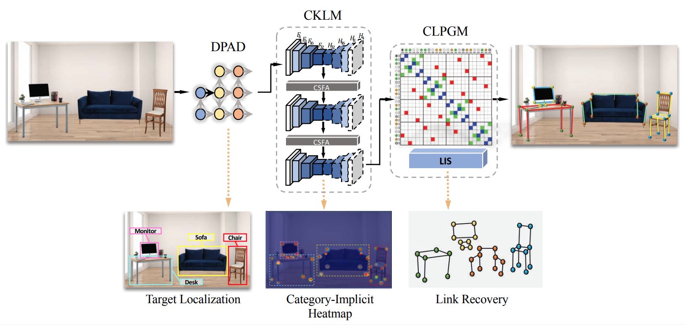
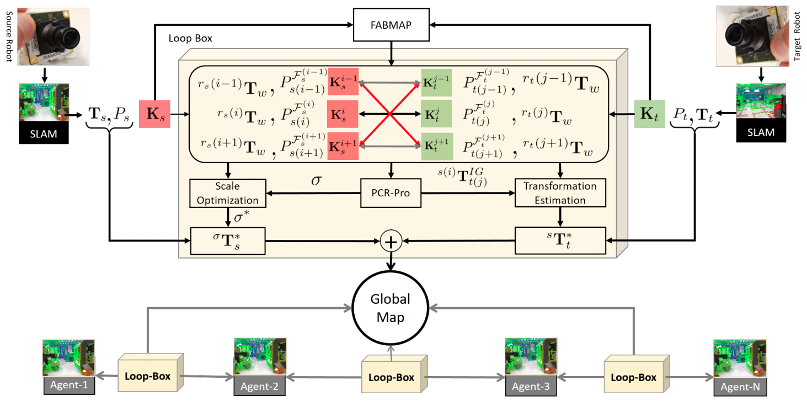
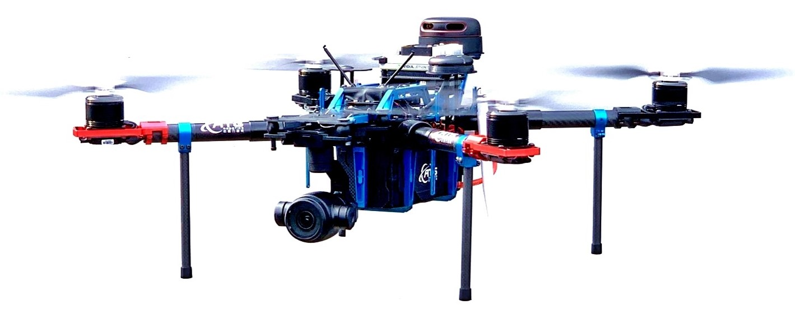
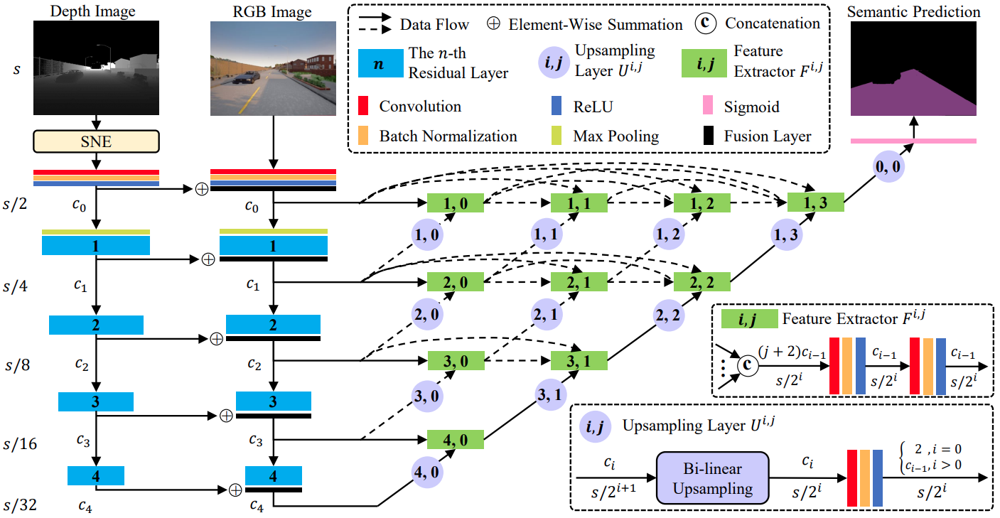
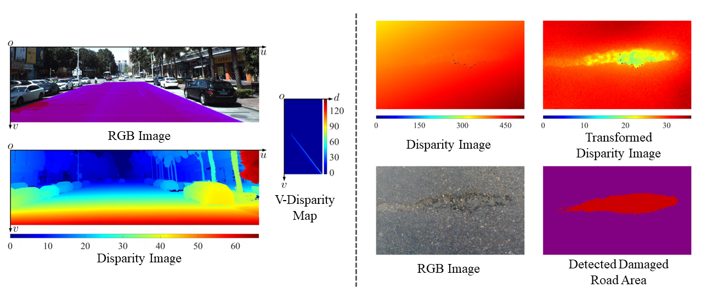
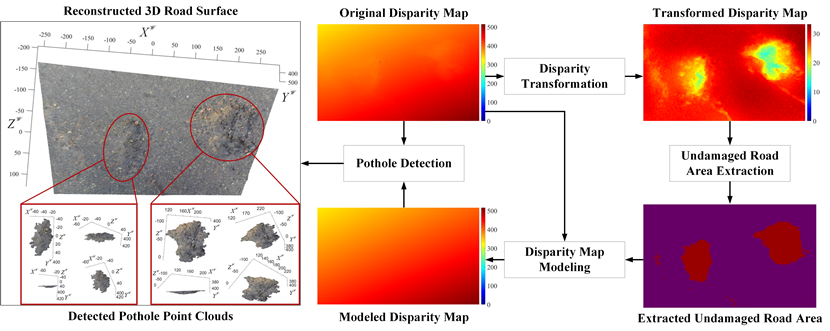
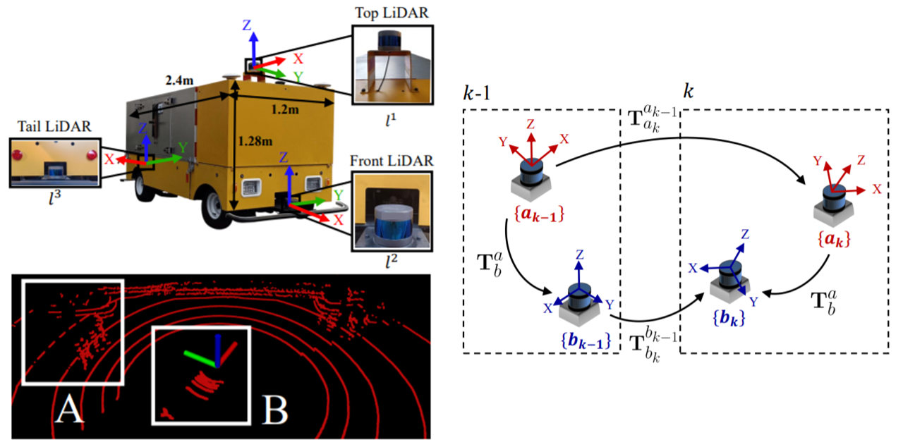
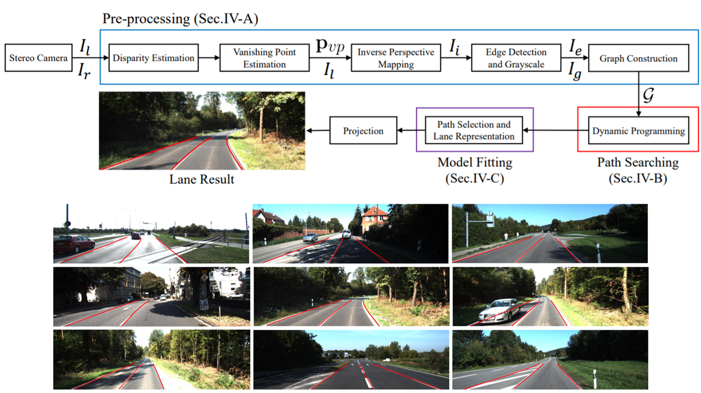

Rui (Ranger) FAN
About
From July 2018 to February 2020, Rui worked as a Research Associate (Postdoc) in the Robotics Institute (RI), as well as the Deputy Director of the Robotics and Multi-Perception Laboratory (RAM-Lab), supervised by Prof. Ming Liu, at the Hong Kong University of Science and Technology (HKUST). Since February 2020, Rui has been working as a Postdoc Fellow with Prof. Linda Zangwill and Prof. David J. Kriegman in the Dept. of Ophthalmology and the Dept. of Computer Science and Engineering at the University of California, San Diego (UCSD). Rui co-founded ATG Robotics in July 2019 and has been their chief scientist since then.
Rui is the General Chair of AVVision.
Rui’s research interests include computer vision, robotics, image/signal processing, and machine/deep learning.
Featured Publications
|  |
Yi-Ge, E., Fan, R., Liu, Z. and Shen, Z. pdf / bibtex |

|
Wang, H., Fan, R. and Liu, M. pdf / bibtex / webpage / code / demo |
|  |
IEEE Trans on Cybernetics (T-Cyb), 2020. (IF: 11.079) Bhutta, M.U.M., Kuse, M., Fan, R., Liu, Y. and Liu, M. pdf / bibtex / demo |

|
Wang, H.*, Fan, R.*, Sun, Y. and Liu, M. pdf / bibtex |
|  |
Wang, H., Liu, Y., Huang, H., Pan, Y., Yu, W., Jiang, J., Lyu, D., Bocus, M.J., Liu, M., Pitas, I. and Fan, R.✉ pdf / bibtex / project page / dataset / demo |

|
Fan, R.*, Wang, H.*, Bocus, M.J. and Liu, M.; pdf / bibtex / webpage / code / dataset |
|  |
Fan, R.*, Wang, H.*, Cai, P. and Liu, M. pdf / bibtex / webpage / code / dataset / demo |

|
Yuan, W., Fan, R., Wang, M.Y. and Chen, Q. pdf / bibtex / code / demo |
|  |
Fan, R. and Liu, M. pdf / bibtex / code |
|  |
Fan, R., Ozgunalp, U., Hosking, B., Liu, M. and Pitas, I. pdf / bibtex / dataset / supp |
|  |
Jiao, J., Yu, Y., Liao, Q., Ye, H., Fan, R. and Liu, M. pdf / bibtex / code |
|  |
Jiao, J., Fan, R., Ma, H. and Liu, M. pdf / bibtex |

|
Fan, R.✉, Jiao, J., Pan, J., Huang, H., Shen, S. and Liu, M. pdf / bibtex / dataset / demo |

|
Fan, R.✉, Ai, X. and Dahnoun, N. pdf / bibtex / dataset |

|
Ozgunalp, U., Fan, R., Ai, X. and Dahnoun, N. pdf / bibtex / demo |
* Equal contributions ✉ Corresponding Author
Demo Videos
CoT-AMFlow: Adaptive Modulation Network with Co-Teaching Strategy for Unsupervised Optical Flow Estimation
ATG-PVD: Ticketing Parking Violations on a Drone
SNE-RoadSeg: Incorporating Surface Normal Information into Semantic Segmentation for Accurate Freespace Detection
Real-Time Dense Stereo Embedded in A UAV for Road Inspection
This embedded road surface 3D reconstruction system has been reported by over ten international media agencies, including VentureBeat, Diamandis, Drobots Company, UAS Vision, Import AI, Impact Lab, US Breaking News, PCNewsBuzz and Engineering 360. (July 07, 2019)
Using DP Towards A Shortest Path Problem-Related Application
Real-Time Stereo Vision-Based Lane Detection System [published on Measurement Science and Technology]
Road Surface 3D Reconstruction Based on Dense Subpixel Disparity Map Estimation
Multiple Lane Detection Algorithm Based on Novel Dense Vanishing Point Estimation
Teaching
-
• Book Chapter “Computer Stereo Vision for Autonomous Driving” (for undergraduates and postgraduates).
-
• Rui’s lecture material “Introduction to Autonomous Car Vision” was used for the Computer Vision, Machine Learning, and Autonomous Systems Web Lecture Series, online.
-
• Lectures for the 2019 short course on deep learning & computer vision for autonomous systems, in Thessaloniki, Greece, invited by Prof. Ioannis Pitas (IEEE Fellow, IEEE Distinguished Lecturer, EURASIP Fellow). [August 26, 2019 – August 27, 2019]
Tutorials & Seminars
-
• Seminar “We Are Driving on the Road” at the Harbin Institute of Technology, Shenzhen. [September 18, 2019]
-
• Seminar “Computer Vision for Intellignet Road Condition Assessment” at Shanghai Jiao tong University. [June 3, 2019]
Awards
- • Best Paper Finalist: Road Curb Detection Using A Novel Tensor Voting Algorithm, 2019 IEEE ROBIO.
- • Best Student Paper: Faster-than-real-time linear lane detection implementation using SoC DSP TMS320C6678, 2016 IEEE IST.
Services
- • General Chair of the Autonomous Vehicle Vision (AVVision) 2021 workshop, in conjuction with WACV 2021.
- • Innovation Program Chair of the 2019 IEEE International Conference on Imaging Systems and Techniques (IST)
- • Journal Reviewers: the IEEE Transactions on Image Processing (TIP), the IEEE Transactions on Cybernetics (TCYB), IEEE Transactions on Intelligent Transportation Systems (TITS), the IEEE Transactions on Intelligent Vehicles (TIV), the IEEE Transactions on Industrial Informatics (TII), the IEEE/ASME TRANSACTIONS ON MECHATRONICS (TMECH), the IEEE Signal Processing Magazine (SPM), the IEEE Robotics and Automation Letters (RAL), Ophthalmology, Scientfic Reports.
- • Conference Reviewers: 2021 IEEE Conference on Computer Vision and Pattern Recognition (CVPR), the thirty-fifth AAAI Conference on Artificial Intelligence (AAAI-21), 2018/2020 European Conference on Computer Vision (ECCV), 2021 Winter Conference on Applications of Computer Vision (WACV), 2020 British Machine Vision Conference (BMVC), 2019 IEEE Conference on Computer Vision and Pattern Recognition (CVPR) Workshop, 2020 International Conference on Robotics and Automation (ICRA), 2019/2020 International Conference on Intelligent Robotics and Systems (IROS), 2019 IEEE European Signal Processing Conference (EUSIPCO), 2019/2020 IEEE Intelligent Transportation Systems Conference (ITSC), 2019/2020 IEEE Intelligent Vehicles Symposium (IV), and 2019 IEEE Conference on Robotics and Biomimetics (ROBIO).
Entrepreneurship
ATG Robotics
News
- • 超低空5G网络资源全自主巡检数字化服务商“反重力智能”获千万级天使轮融资, 今日头条. [November 09, 2020]
- • 独家5G网联无人机基站巡检服务供应商“反重力智能”获千万级天使轮融资 东方嘉富领投, 网易. [November 09, 2020]
- • “反重力智能”获千万级天使轮融资, 东方财富网. [November 09, 2020]
- • 反重力智能完成1000万人民币天使轮融资, 亿邦动力网. [November 09, 2020]
- • “反重力智能”获千万级天使轮融资, 新浪财经. [November 09, 2020]
- • 超低空5G网络资源全自主巡检数字化服务商“反重力智能”获千万级天使轮融资, 36氪. [November 08, 2020]
- • 独家电报|超低空5G网络资源全自主巡检数字化服务开创者“反重力智能”获千万级天使轮融资, 科创板日报. [November 08, 2020]
- • 反重力智能完成1000万人民币天使轮融资, FLIPBOARD. [November 08, 2020]